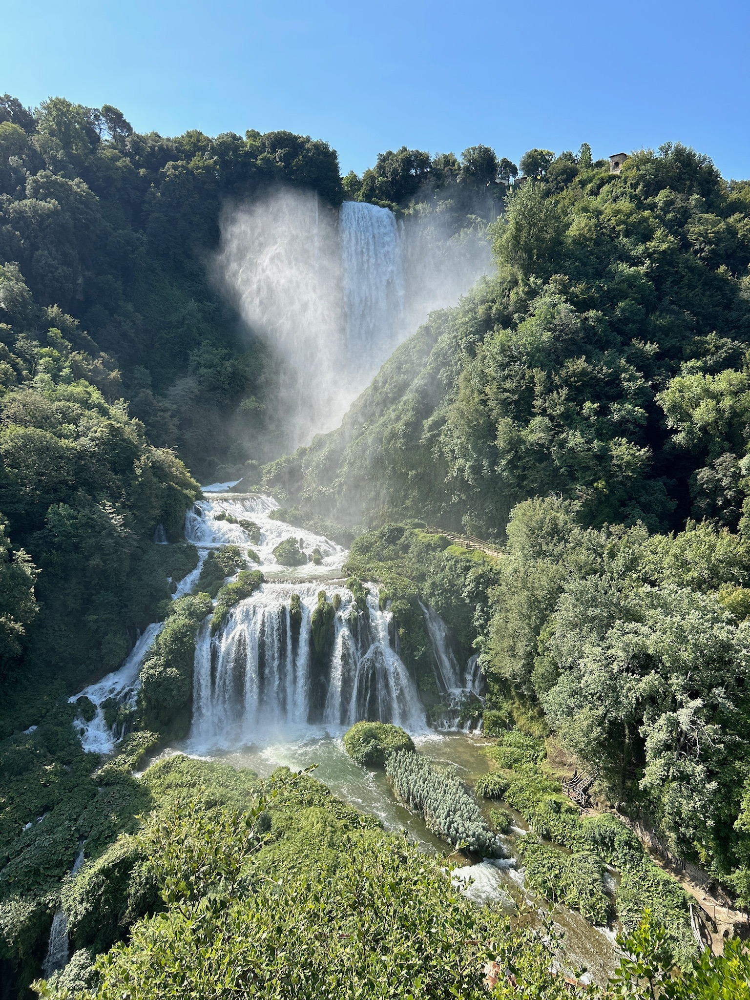

Indice
Scopri l’Italia più autentica con noi!
Parti per un viaggio indimenticabile tra natura, bellezza e tradizione.
Dolomiti Cuore delle Alpi
Vivi l’emozione dell’alta quota tra sentieri panoramici, rifugi accoglienti e paesaggi mozzafiato. Le Dolomiti ti aspettano per un’esperienza tra sport, relax e sapori tipici.
Vernazza Perla delle Cinque Terre
Perditi tra i vicoli colorati, il profumo del mare e il fascino di un borgo incastonato tra roccia e acqua. Ideale per chi cerca romanticismo, cultura e tramonti spettacolari.
Cascate delle Marmore La forza della natura
Un capolavoro d’ingegneria romana immerso nel verde dell’Umbria. Ammira la potenza delle acque e lasciati conquistare da percorsi naturalistici unici e tanta adrenalina.
Tre mete, un solo viaggio da sogno. Contattaci e crea il tuo itinerario su misura!
Val d’Algone
Un angolo segreto del Trentino
Immersa nel Parco Naturale Adamello Brenta,
la Val d’Algone è una delle valli più incontaminate e silenziose del Trentino. Un luogo dove la natura regna sovrana, tra boschi di abeti, praterie alpine e scorci mozzafiato sulle Dolomiti di Brenta. Perfetta per chi cerca pace, escursioni tra la fauna selvatica e sentieri che raccontano storie antiche. La Val d’Algone è il rifugio ideale per gli amanti della montagna più autentica.
Cinque Terre
Un sogno colorato affacciato sul mare
Le Cinque Terre sono un gioiello unico incastonato tra le scogliere della Riviera Ligure. Monterosso, Vernazza, Corniglia, Manarola e Riomaggiore: cinque borghi incantati dove il tempo sembra essersi fermato. Case dai colori vivaci, vigneti a picco sul mare, sentieri panoramici e tramonti spettacolari rendono questa destinazione perfetta per chi cerca bellezza, autenticità e un’atmosfera romantica. Un patrimonio UNESCO che lascia il segno nel cuore.
Cascate delle Marmore
La potenza della natura in Umbria
Le Cascate delle Marmore sono uno spettacolo di pura energia. Con i loro 165 metri di salto complessivo, sono tra le cascate più alte d’Europa, create in epoca romana e oggi perfettamente inserite nel paesaggio umbro. Un luogo magico dove l’acqua si getta impetuosa tra boschi e sentieri, regalando emozioni forti a ogni visita. Percorsi naturalistici, belvedere mozzafiato e attività per tutti rendono le Marmore una meta imperdibile per gli amanti della natura e dell’avventura.
